Aplicación 3.4 (No normalidad de los errores y observaciones atípicas): Muestra de datos con observaciones atípicas simuladas
En esta aplicación se tratará el tema de la no normalidad de los errores causada por la presencia de observaciones atípicas, y se propondrán estimadores que son ‘robustos’ ante la presencia de dichos datos en la base muestral.
Código R
# Lectura de librerías
library(tidyverse)
library(car)
library(lmtest)
library(quantreg)
library(MASS)
library(moments)
library(tseries)
# Lectura de datos
ATIP <- read_csv("data/ATIP.csv")
summary(ATIP) X Y
Min. :1.500 Min. :2.500
1st Qu.:2.550 1st Qu.:3.275
Median :4.000 Median :4.050
Mean :4.109 Mean :4.318
3rd Qu.:4.975 3rd Qu.:5.025
Max. :9.500 Max. :8.000 # Gráficas
# Diagrama de puntos
ggplot(ATIP, aes(x=X, y=Y)) + geom_point() +
labs(title="Diagrama de puntos", x="X", y="Y")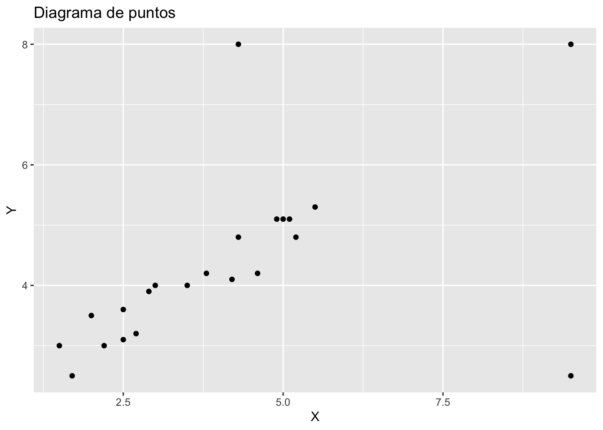
# Modelo de regresión lineal
summary(lm_YX <- lm(Y ~ X, data = ATIP))
Call:
lm(formula = Y ~ X, data = ATIP)
Residuals:
Min 1Q Median 3Q Max
-3.6674 -0.3891 -0.0534 0.4355 3.6163
Coefficients:
Estimate Std. Error t value Pr(>|t|)
(Intercept) 2.9087 0.6128 4.746 0.000123 ***
X 0.3430 0.1331 2.577 0.017987 *
---
Signif. codes: 0 '***' 0.001 '**' 0.01 '*' 0.05 '.' 0.1 ' ' 1
Residual standard error: 1.297 on 20 degrees of freedom
Multiple R-squared: 0.2493, Adjusted R-squared: 0.2118
F-statistic: 6.643 on 1 and 20 DF, p-value: 0.01799plot(Y ~ X , data=ATIP)
abline(lm_YX)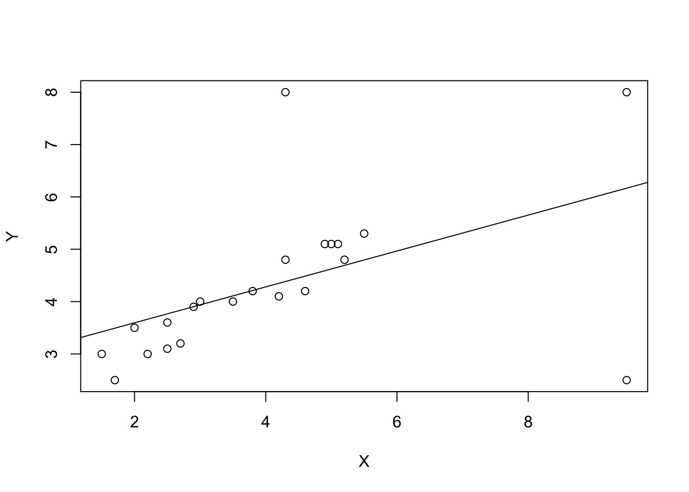
# ¿Qué pasa si se eliminan las tres observaciones atípicas?
lmtr_YX <- lm(Y ~ X, data = ATIP[1:19,])
compareCoefs(lm_YX,lmtr_YX)Calls:
1: lm(formula = Y ~ X, data = ATIP)
2: lm(formula = Y ~ X, data = ATIP[1:19, ])
Model 1 Model 2
(Intercept) 2.909 1.869
SE 0.613 0.196
X 0.3430 0.6109
SE 0.1331 0.0522
# Distribución de los errores del modelo
par(mfrow=c(1,1))
hist(lm_YX$residuals, main = "")
box()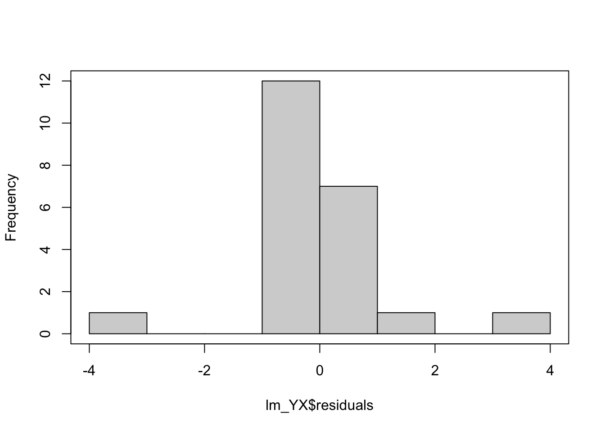
densityPlot(residuals(lm_YX))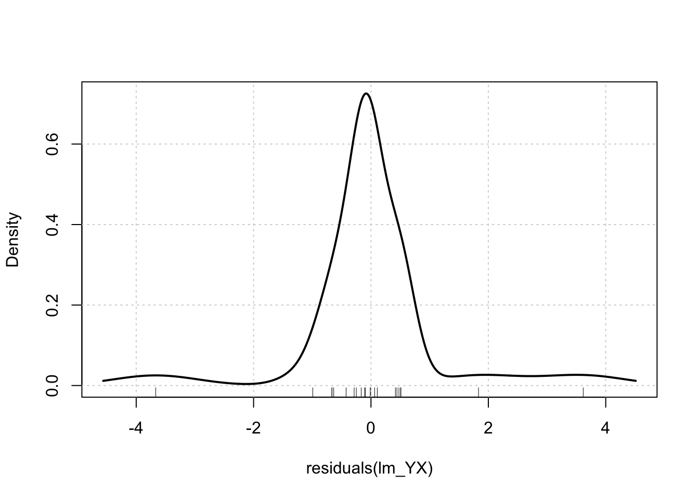
qqnorm(residuals(lm_YX))
qqline(residuals(lm_YX))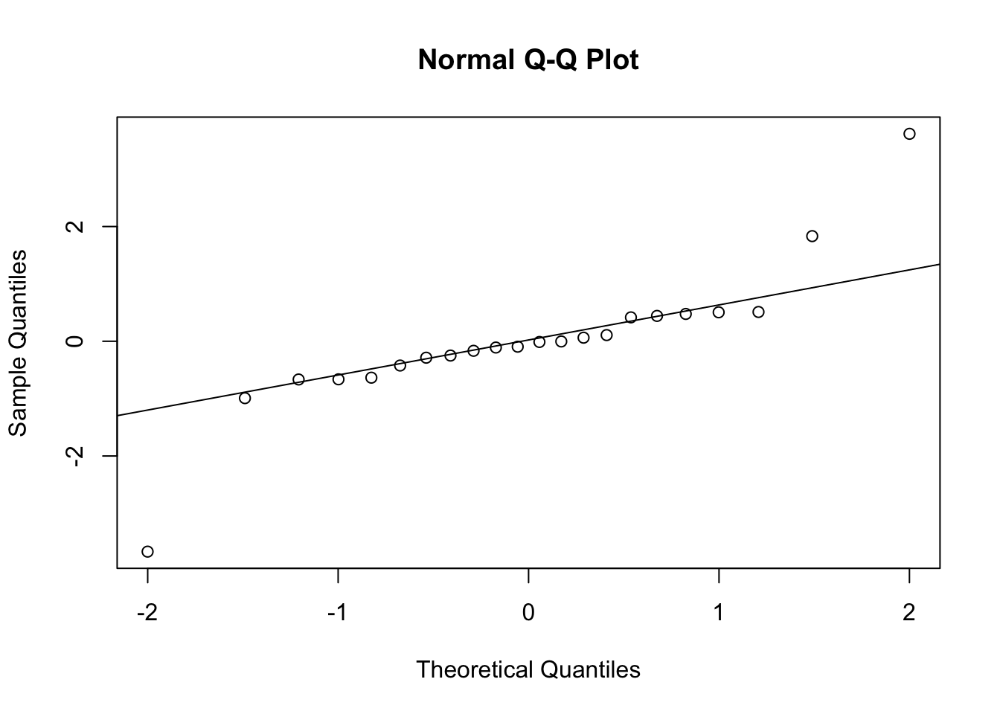
qqPlot(lm_YX, distribution="norm")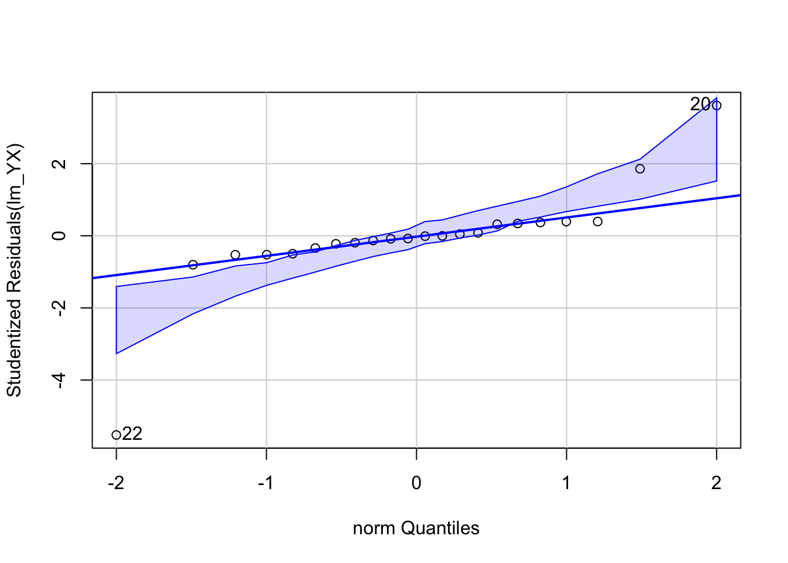
[1] 20 22# Contrastes de normalidad
r <- resid(lm_YX)
rbar <- mean(r)
sdr <- sd(r)
hist(lm_YX$residuals, col="grey", freq=FALSE,
main="Distribución de los residuos",
ylab="Densidad estimada", xlab="residuos")
curve(dnorm(x, rbar, sdr), col=2, add=TRUE, ylab="Density", xlab="r")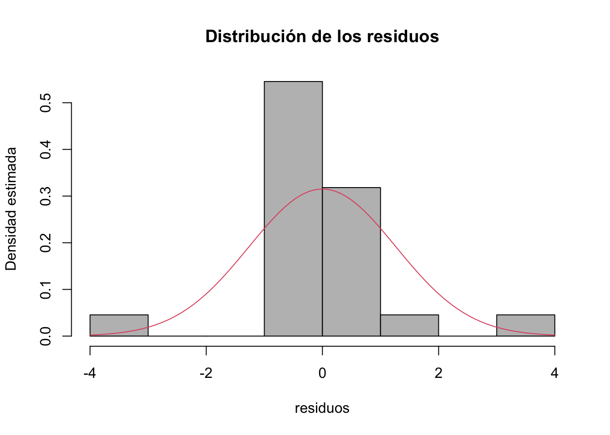
# Librería moments
skewness(lm_YX$residuals)[1] 0.06517037kurtosis(lm_YX$residuals)[1] 7.089934agostino.test(lm_YX$residuals)
D'Agostino skewness test
data: lm_YX$residuals
skew = 0.06517, z = 0.15162, p-value = 0.8795
alternative hypothesis: data have a skewnessanscombe.test(lm_YX$residuals)
Anscombe-Glynn kurtosis test
data: lm_YX$residuals
kurt = 7.0899, z = 3.0186, p-value = 0.002539
alternative hypothesis: kurtosis is not equal to 3jarque.test(lm_YX$residuals)
Jarque-Bera Normality Test
data: lm_YX$residuals
JB = 15.349, p-value = 0.0004645
alternative hypothesis: greater# librería tseries
jarque.bera.test(lm_YX$residuals)
Jarque Bera Test
data: lm_YX$residuals
X-squared = 15.349, df = 2, p-value = 0.0004645shapiro.test(lm_YX$residuals)
Shapiro-Wilk normality test
data: lm_YX$residuals
W = 0.81712, p-value = 0.0009388ks.test(lm_YX$residuals, pnorm)
Exact one-sample Kolmogorov-Smirnov test
data: lm_YX$residuals
D = 0.21393, p-value = 0.2309
alternative hypothesis: two-sided# Detección de observaciones atípicas
# Observaciones atípicas en las variables explicativas
# (leverages <-> apalancamiento)
hat <- hatvalues(lm_YX)
summary(hat) Min. 1st Qu. Median Mean 3rd Qu. Max.
0.04554 0.05003 0.05962 0.09091 0.08104 0.35138 which(hat > 2 * mean(hat))21 22
21 22 plot(hat)
abline(h = mean(hat), col = 4)
abline(h = 2 * mean(hat), col = 2)
id <- which(hat > 2 * mean(hat))
text(id, hat[id], rownames(ATIP)[id], pos = 1, xpd = TRUE)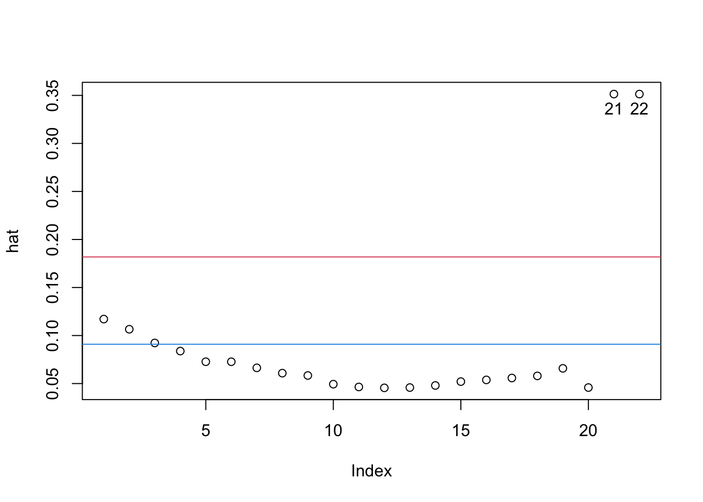
# Observaciones atípicas en la variable dependiente
# (outliers)
slm_YX <- summary(lm_YX)
# Residuos estandarizados
r <- lm_YX$residuals/slm_YX$sigma
summary(r) Min. 1st Qu. Median Mean 3rd Qu. Max.
-2.82713 -0.29991 -0.04119 0.00000 0.33574 2.78778 densityPlot(r)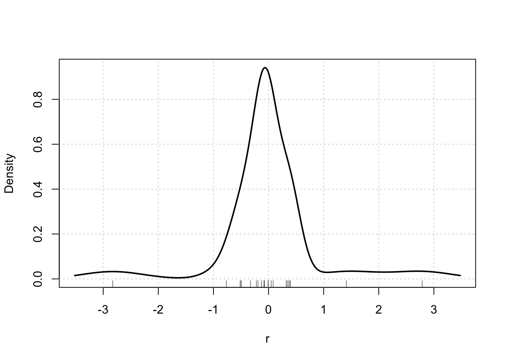
which(abs(r) > 2.5)20 22
20 22 plot(r)
abline(h = c(0,-2.5, 2.5), col = 4)
id <- which(abs(r) > 2.5)
text(id, r[id], rownames(ATIP)[id], pos = 1, xpd = TRUE)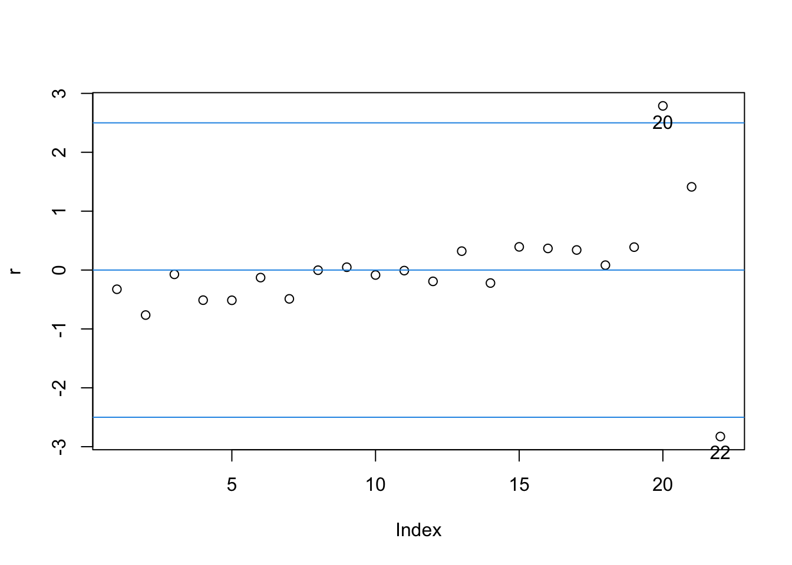
# Residuos estudentizados (internamente)
rs <- rstandard(lm_YX)
summary(rs) Min. 1st Qu. Median Mean 3rd Qu. Max.
-3.51034 -0.31701 -0.04312 -0.01662 0.34508 2.85396 densityPlot(rs)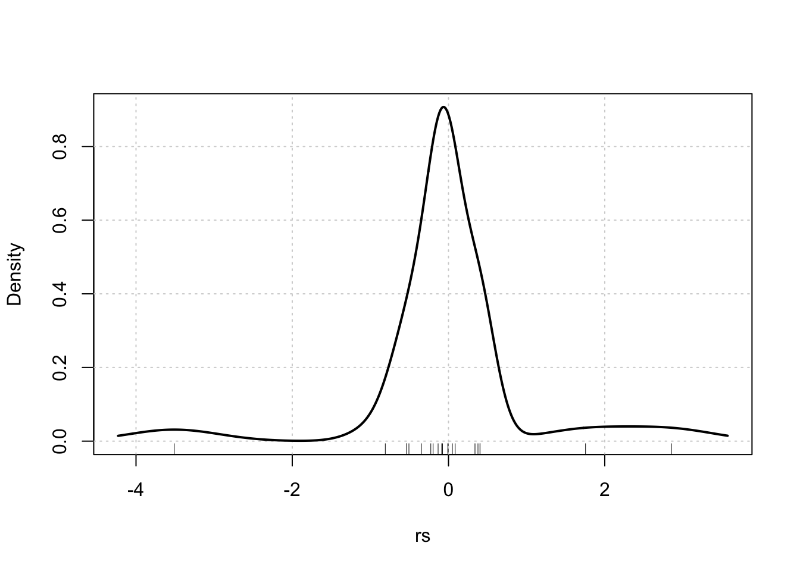
which(abs(rs) > 2)20 22
20 22 plot(rs)
abline(h = c(0,-2, 2)*sd(rs), col = 4)
id <- which(abs(r) > 2*sd(rs))
text(id, r[id], rownames(ATIP)[id], pos = 1, xpd = TRUE)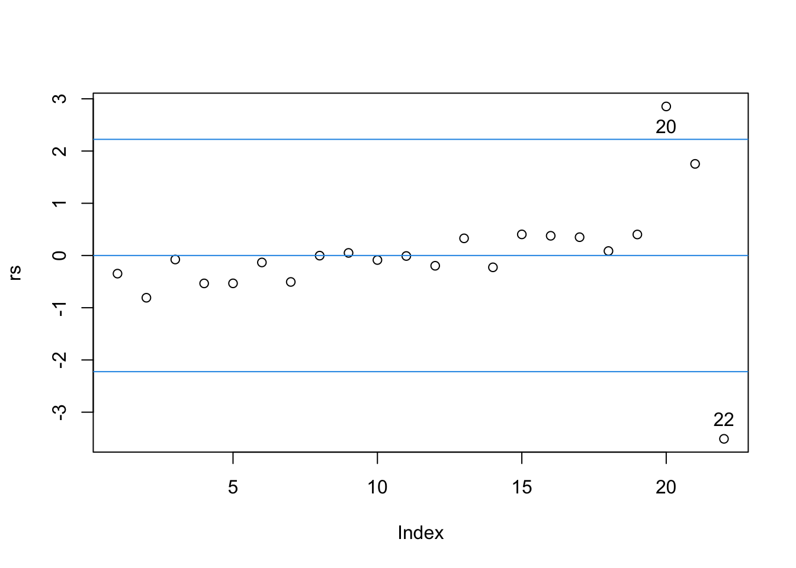
# Residuos estudentizados (externamente)
rt <- rstudent(lm_YX)
rt 1 2 3 4 5 6
-0.339443573 -0.801621429 -0.074710153 -0.524455394 -0.523575574 -0.129761631
7 8 9 10 11 12
-0.496849799 -0.002665832 0.048211719 -0.084207435 -0.009354414 -0.191969037
13 14 15 16 17 18
0.321112299 -0.220966280 0.395595340 0.369165231 0.342764870 0.083323817
19 20 21 22
0.393951873 3.613064780 1.858685559 -5.522252312 densityPlot(rt)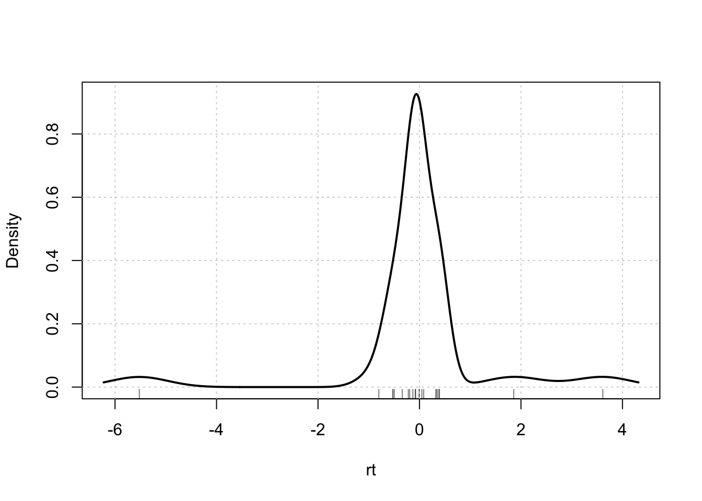
qqPlot(lm_YX)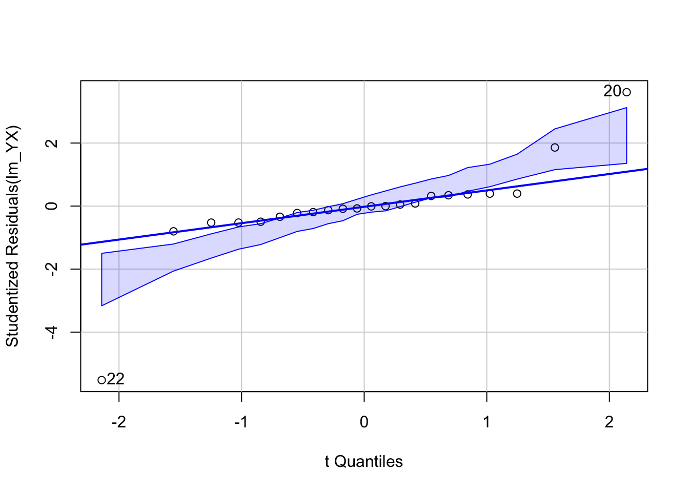
[1] 20 22outlierTest(lm_YX) rstudent unadjusted p-value Bonferroni p
22 -5.522252 2.5102e-05 0.00055224
20 3.613065 1.8525e-03 0.04075600# Medidas de diagnóstico específicas
# Obs. influyentes: DFBETAS_i, DFFITS_i, COVRATIO_i, DCOOK_i y h_i
# NOTA: la columna inf señala observaciones inusuales para al menos una medida
influence.measures(lm_YX)Influence measures of
lm(formula = Y ~ X, data = ATIP) :
dfb.1_ dfb.X dffit cov.r cook.d hat inf
1 -0.121055 0.096704 -0.123628 1.240 8.00e-03 0.1171
2 -0.268656 0.209618 -0.276825 1.160 3.90e-02 0.1065
3 -0.022687 0.016968 -0.023821 1.220 2.99e-04 0.0923
4 -0.148489 0.107322 -0.158632 1.175 1.31e-02 0.0838
5 -0.132415 0.089762 -0.146611 1.161 1.12e-02 0.0727
6 -0.032817 0.022246 -0.036336 1.193 6.94e-04 0.0727
7 -0.115812 0.074339 -0.132456 1.157 9.12e-03 0.0664
8 -0.000569 0.000341 -0.000679 1.180 2.42e-07 0.0608
9 0.009826 -0.005654 0.012007 1.176 7.59e-05 0.0584
10 -0.013126 0.005397 -0.019188 1.165 1.94e-04 0.0494
11 -0.001193 0.000304 -0.002065 1.162 2.24e-06 0.0465
12 -0.017270 -0.001833 -0.041933 1.156 9.24e-04 0.0455
13 0.025883 0.006439 0.070382 1.149 2.59e-03 0.0458
14 -0.011611 -0.011406 -0.049612 1.158 1.29e-03 0.0480
15 0.009670 0.032970 0.092688 1.150 4.48e-03 0.0520
16 0.005558 0.034690 0.088036 1.154 4.05e-03 0.0538
17 0.001936 0.035862 0.083319 1.159 3.63e-03 0.0558
18 -0.000315 0.009609 0.020672 1.175 2.25e-04 0.0580
19 -0.012690 0.058166 0.104569 1.167 5.71e-03 0.0658
20 0.291228 0.072449 0.791915 0.408 1.96e-01 0.0458 *
21 -0.917055 1.276478 1.368027 1.223 8.33e-01 0.3514 *
22 2.724619 -3.792484 -4.064480 0.252 3.34e+00 0.3514 *S(influence.measures(lm_YX))Potentially influential observations of
lm(formula = Y ~ X, data = ATIP) :
dfb.1_ dfb.X dffit cov.r cook.d hat
20 0.29 0.07 0.79 0.41_* 0.20 0.05
21 -0.92 1.28_* 1.37_* 1.22 0.83_* 0.35_*
22 2.72_* -3.79_* -4.06_* 0.25_* 3.34_* 0.35_*influenceIndexPlot(lm_YX, vars=c("hat", "Studentized","Cook"))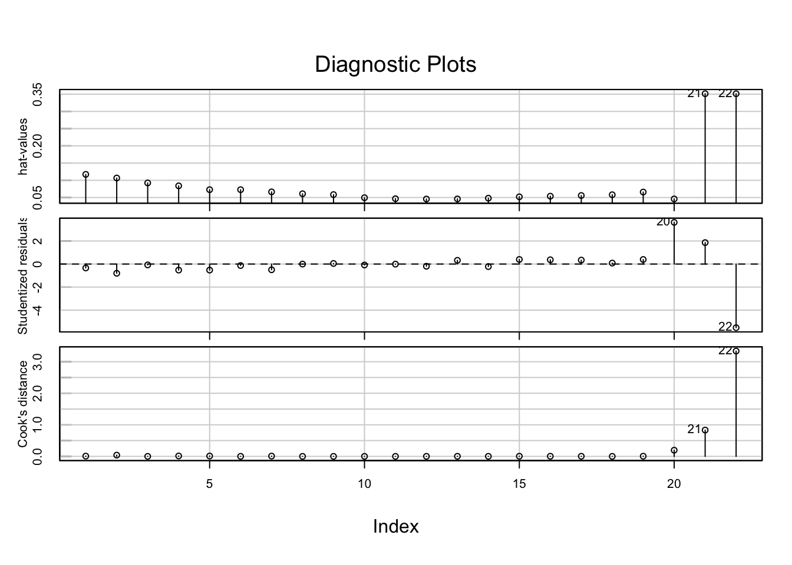
influencePlot(lm_YX, xlab="Hat values")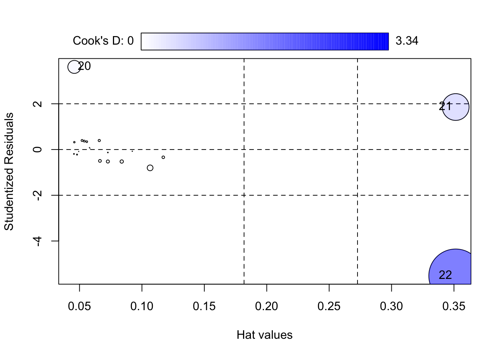
StudRes Hat CookD
20 3.613065 0.0458382 0.1956463
21 1.858686 0.3513751 0.8334543
22 -5.522252 0.3513751 3.3376919# Medidas individuales
hat <- hatvalues(lm_YX)
dfbetas <- dfbetas(lm_YX)
dffits <- dffits(lm_YX)
dcook <- cooks.distance(lm_YX)
hat ; dfbetas ; dffits; dcook 1 2 3 4 5 6 7
0.11711229 0.10654749 0.09227928 0.08381979 0.07270953 0.07270953 0.06635534
8 9 10 11 12 13 14
0.06084327 0.05840303 0.04935980 0.04646022 0.04554154 0.04583820 0.04799135
15 16 17 18 19 20 21
0.05203927 0.05380964 0.05579054 0.05798197 0.06581944 0.04583820 0.35137515
22
0.35137515 (Intercept) X
1 -0.1210550547 0.0967044410
2 -0.2686558904 0.2096182664
3 -0.0226869829 0.0169684103
4 -0.1484894369 0.1073215817
5 -0.1324152881 0.0897623911
6 -0.0328174664 0.0222464815
7 -0.1158120753 0.0743388221
8 -0.0005691882 0.0003412440
9 0.0098255572 -0.0056536588
10 -0.0131259608 0.0053971790
11 -0.0011927906 0.0003037916
12 -0.0172701507 -0.0018327463
13 0.0258829797 0.0064389476
14 -0.0116105156 -0.0114064102
15 0.0096704719 0.0329704531
16 0.0055580652 0.0346902377
17 0.0019363561 0.0358623130
18 -0.0003147545 0.0096088290
19 -0.0126898190 0.0581659541
20 0.2912279682 0.0724492173
21 -0.9170553069 1.2764784676
22 2.7246194301 -3.7924844977 1 2 3 4 5
-0.1236277852 -0.2768249321 -0.0238207591 -0.1586322104 -0.1466111950
6 7 8 9 10
-0.0363357436 -0.1324561839 -0.0006785315 0.0120070906 -0.0191879700
11 12 13 14 15
-0.0020648467 -0.0419330580 0.0703816904 -0.0496120344 0.0926875935
16 17 18 19 20
0.0880362600 0.0833186873 0.0206721685 0.1045694572 0.7919148784
21 22
1.3680269444 -4.0644798251 1 2 3 4 5 6
7.995633e-03 3.901319e-02 2.985589e-04 1.305531e-02 1.115217e-02 6.942722e-04
7 8 9 10 11 12
9.115586e-03 2.423183e-07 7.586978e-05 1.937057e-04 2.243985e-06 9.236723e-04
13 14 15 16 17 18
2.593076e-03 1.292129e-03 4.484635e-03 4.050098e-03 3.631232e-03 2.248329e-04
19 20 21 22
5.708514e-03 1.956463e-01 8.334543e-01 3.337692e+00 max(hatvalues(lm_YX))[1] 0.3513751which.max(hatvalues(lm_YX))21
21 max(abs(dffits(lm_YX)))[1] 4.06448which.max(abs(dffits(lm_YX)))22
22 max(cooks.distance(lm_YX))[1] 3.337692which.max(cooks.distance(lm_YX))22
22 # Gráficos de variable añadida, buscando casos influyentes
avPlots(lm_YX, id=list(cex=0.60, method="mahal")) 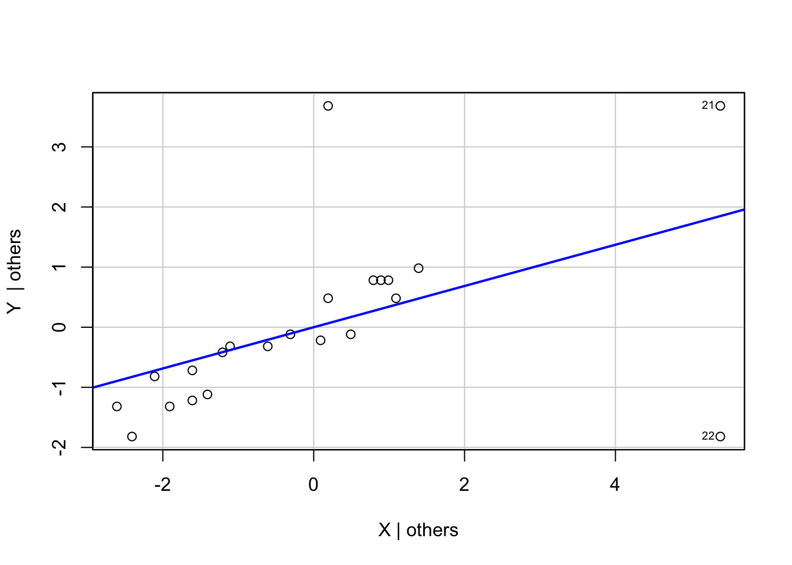
# Estimación robusta
# Regresiones cuartilíticas
# tau=0.5
summary(qr_YX <- rq(Y ~ X, data = ATIP))
Call: rq(formula = Y ~ X, data = ATIP)
tau: [1] 0.5
Coefficients:
coefficients lower bd upper bd
(Intercept) 2.13750 1.47445 2.67331
X 0.57500 0.32363 0.74276 # Comparación de regresiones
plot(Y ~ X , data=ATIP)
abline(lm_YX)
abline(qr_YX, lty=2)
legend("topleft", c("Regresión MCO", "Regresión DAM"),
lty = c(1, 2), bty = "n")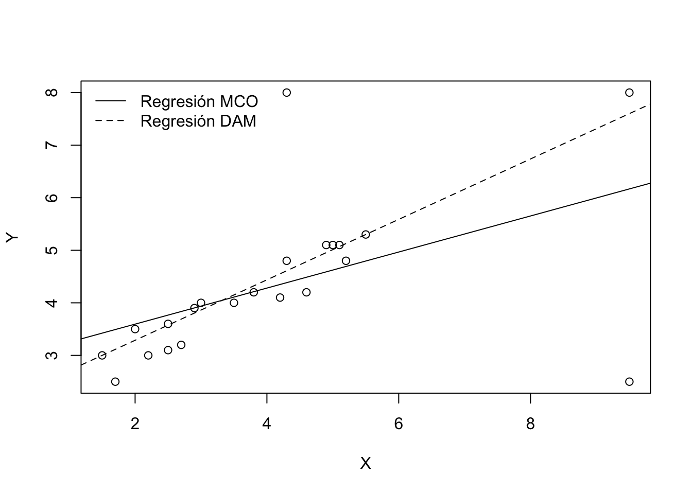
# tau secuencial
S(qr_YX <- rq(Y ~ X, data = ATIP, tau=seq(0.1,0.9,0.1)))
Call: rq(formula = Y ~ X, tau = seq(0.1, 0.9, 0.1), data = ATIP)
tau: [1] 0.1
Coefficients:
coefficients lower bd upper bd
(Intercept) 3.09375 2.61079 3.14417
X -0.06250 -0.06703 0.57699
Call: rq(formula = Y ~ X, tau = seq(0.1, 0.9, 0.1), data = ATIP)
tau: [1] 0.2
Coefficients:
coefficients lower bd upper bd
(Intercept) 1.90000 1.40106 3.50461
X 0.50000 -0.08789 0.70048
Call: rq(formula = Y ~ X, tau = seq(0.1, 0.9, 0.1), data = ATIP)
tau: [1] 0.3
Coefficients:
coefficients lower bd upper bd
(Intercept) 1.68000 1.29958 2.92467
X 0.60000 -0.00927 0.70201
Call: rq(formula = Y ~ X, tau = seq(0.1, 0.9, 0.1), data = ATIP)
tau: [1] 0.4
Coefficients:
coefficients lower bd upper bd
(Intercept) 1.72500 1.37760 2.70125
X 0.65000 0.24673 0.70275
Call: rq(formula = Y ~ X, tau = seq(0.1, 0.9, 0.1), data = ATIP)
tau: [1] 0.5
Coefficients:
coefficients lower bd upper bd
(Intercept) 2.13750 1.47445 2.67331
X 0.57500 0.32363 0.74276
Call: rq(formula = Y ~ X, tau = seq(0.1, 0.9, 0.1), data = ATIP)
tau: [1] 0.6
Coefficients:
coefficients lower bd upper bd
(Intercept) 2.10000 1.53990 2.44895
X 0.60000 0.43072 0.74284
Call: rq(formula = Y ~ X, tau = seq(0.1, 0.9, 0.1), data = ATIP)
tau: [1] 0.7
Coefficients:
coefficients lower bd upper bd
(Intercept) 2.07353 1.93579 2.41902
X 0.61765 0.51567 0.63299
Call: rq(formula = Y ~ X, tau = seq(0.1, 0.9, 0.1), data = ATIP)
tau: [1] 0.8
Coefficients:
coefficients lower bd upper bd
(Intercept) 2.15385 2.06883 2.49759
X 0.61538 0.53634 1.04264
Call: rq(formula = Y ~ X, tau = seq(0.1, 0.9, 0.1), data = ATIP)
tau: [1] 0.9
Coefficients:
coefficients lower bd upper bd
(Intercept) 2.30000 2.03634 6.40464
X 0.60000 0.60000 2.06745 plot(summary(qr_YX), level=0.95)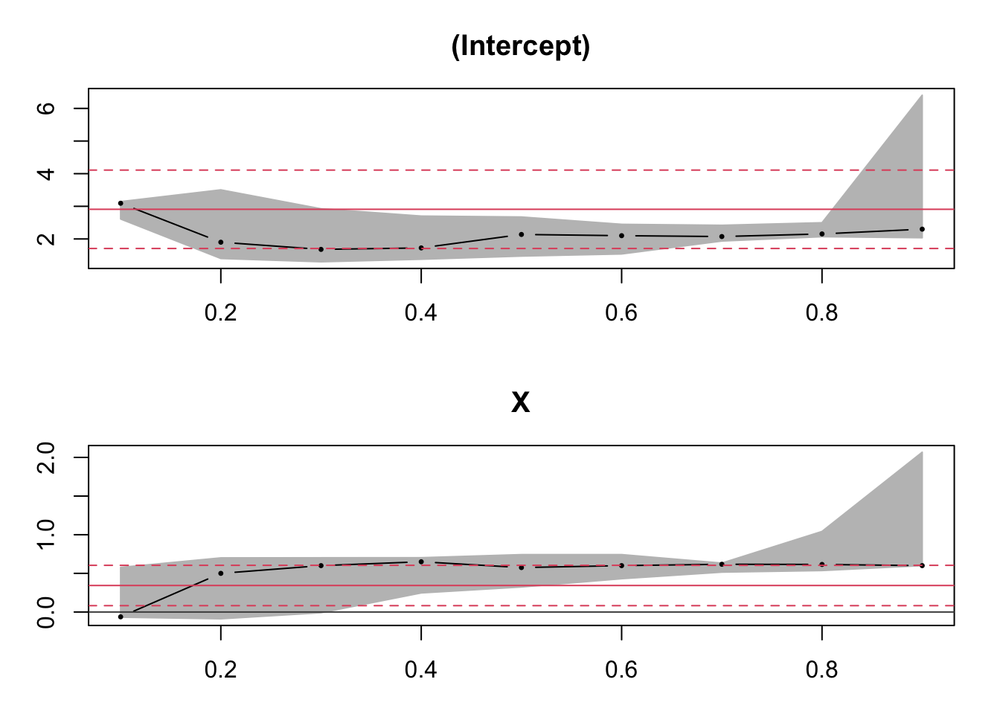
# tau discreto
S(qr_YX <- rq(Y ~ X, tau = c(0.25, 0.50, 0.75), data = ATIP))
Call: rq(formula = Y ~ X, tau = c(0.25, 0.5, 0.75), data = ATIP)
tau: [1] 0.25
Coefficients:
coefficients lower bd upper bd
(Intercept) 1.79000 1.39508 3.01749
X 0.55000 -0.10318 0.70372
Call: rq(formula = Y ~ X, tau = c(0.25, 0.5, 0.75), data = ATIP)
tau: [1] 0.5
Coefficients:
coefficients lower bd upper bd
(Intercept) 2.13750 1.47445 2.67331
X 0.57500 0.32363 0.74276
Call: rq(formula = Y ~ X, tau = c(0.25, 0.5, 0.75), data = ATIP)
tau: [1] 0.75
Coefficients:
coefficients lower bd upper bd
(Intercept) 2.09848 2.03503 2.39653
X 0.62121 0.52358 0.65685 plot(qr_YX)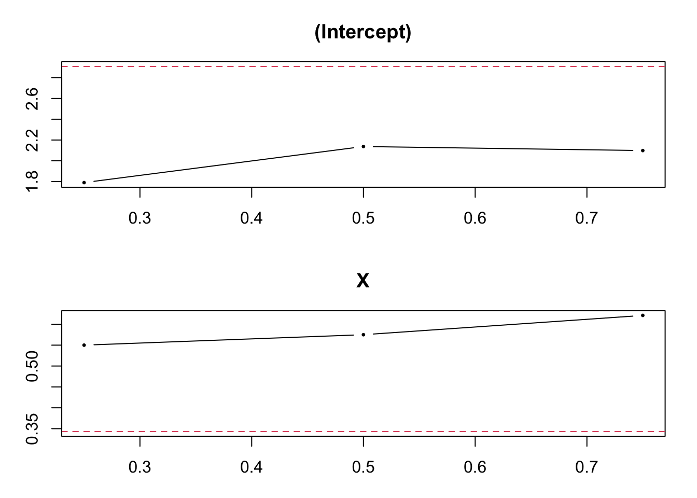
# Estimadores M y MM
summary(rlm_YX <- rlm(Y ~ X, data = ATIP, method="MM")) # Estim. M: method="M"
Call: rlm(formula = Y ~ X, data = ATIP, method = "MM")
Residuals:
Min 1Q Median 3Q Max
-5.36813 -0.29629 0.02774 0.25640 3.46961
Coefficients:
Value Std. Error t value
(Intercept) 1.7703 0.1499 11.8097
X 0.6419 0.0326 19.7167
Residual standard error: 0.3874 on 20 degrees of freedomplot(Y ~ X , data=ATIP)
abline(lm_YX)
abline(rlm_YX, lty=2)
legend("topleft", c("Regresión MCO", "Regresión MM"), lty = c(1, 2), bty = "n")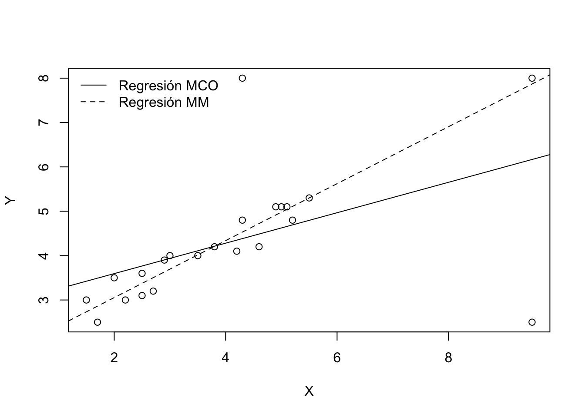
Código Python
# Lectura de librerías
import numpy as np
import pandas as pd
import matplotlib.pyplot as plt
import seaborn as sns
import statsmodels.api as sm
import statsmodels.stats.api as sms
import statsmodels.formula.api as smf
from statsmodels.compat import lmap
from statsmodels.compat import lzip
from scipy import stats
# Lectura de datos
ATIP = pd.read_csv("data/ATIP.csv")
ATIP .describe().round(2) X Y
count 22.00 22.00
mean 4.11 4.32
std 2.13 1.46
min 1.50 2.50
25% 2.55 3.28
50% 4.00 4.05
75% 4.97 5.02
max 9.50 8.00# Gráficas
# Diagrama de puntos
plt.figure(1)
sns.scatterplot(x="X", y="Y", data=ATIP);
plt.show()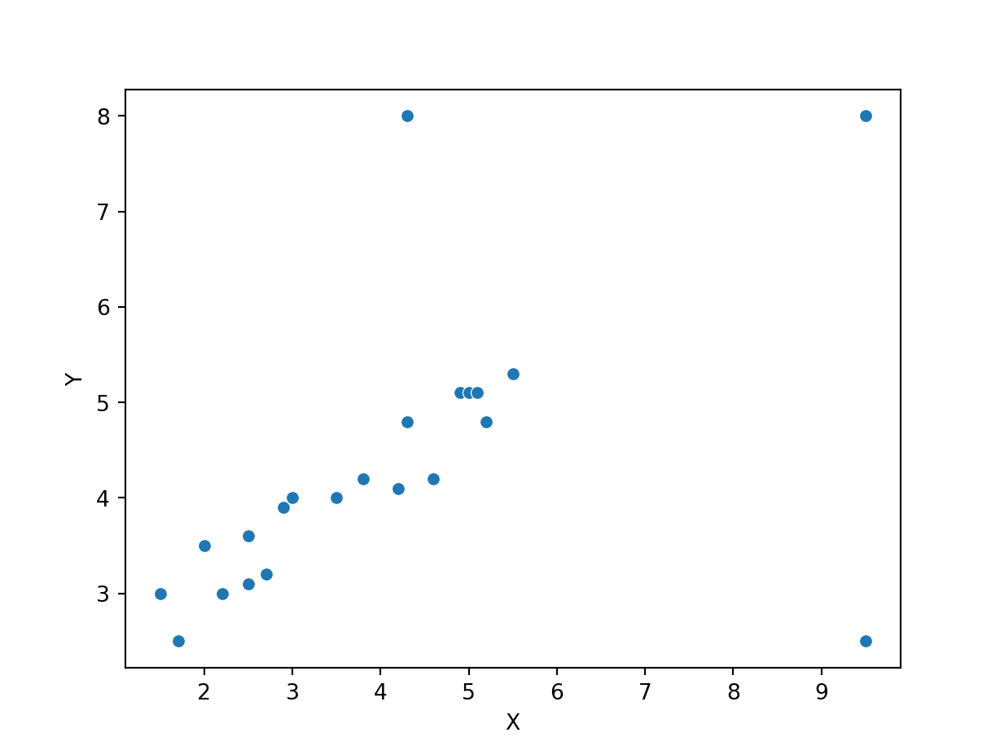
# Modelo de regresión lineal
formula = 'Y ~ X'
lm_YX = smf.ols(formula, ATIP).fit()
print(lm_YX.summary()) OLS Regression Results
==============================================================================
Dep. Variable: Y R-squared: 0.249
Model: OLS Adj. R-squared: 0.212
Method: Least Squares F-statistic: 6.643
Date: Wed, 15 Nov 2023 Prob (F-statistic): 0.0180
Time: 09:37:21 Log-Likelihood: -35.893
No. Observations: 22 AIC: 75.79
Df Residuals: 20 BIC: 77.97
Df Model: 1
Covariance Type: nonrobust
==============================================================================
coef std err t P>|t| [0.025 0.975]
------------------------------------------------------------------------------
Intercept 2.9087 0.613 4.746 0.000 1.630 4.187
X 0.3430 0.133 2.577 0.018 0.065 0.621
==============================================================================
Omnibus: 9.135 Durbin-Watson: 1.408
Prob(Omnibus): 0.010 Jarque-Bera (JB): 15.349
Skew: 0.065 Prob(JB): 0.000464
Kurtosis: 7.090 Cond. No. 10.6
==============================================================================
Notes:
[1] Standard Errors assume that the covariance matrix of the errors is correctly specified.plt.figure(2)
sns.lmplot(x="X", y="Y", data=ATIP);
plt.show()
# Contrastes de normalidad
# Test de Jarque-Bera
name = ["Jarque-Bera", "Chi^2 two-tail prob.", "Skew", "Kurtosis"]
test = sms.jarque_bera(lm_YX.resid)
lzip(name, test)[('Jarque-Bera', 15.349166421968405), ('Chi^2 two-tail prob.', 0.00046448410913513467), ('Skew', 0.0651703702648101), ('Kurtosis', 7.089933554345362)]# Test Omni
name = ["Chi^2", "Two-tail probability"]
test = sms.omni_normtest(lm_YX.resid)
lzip(name, test)[('Chi^2', 9.134967773529176), ('Two-tail probability', 0.01038405433188652)]# Detección de observaciones atípicas
plt.figure(3)
fig = sm.graphics.influence_plot(lm_YX, criterion="cooks")
fig.tight_layout(pad=1.0)
plt.show()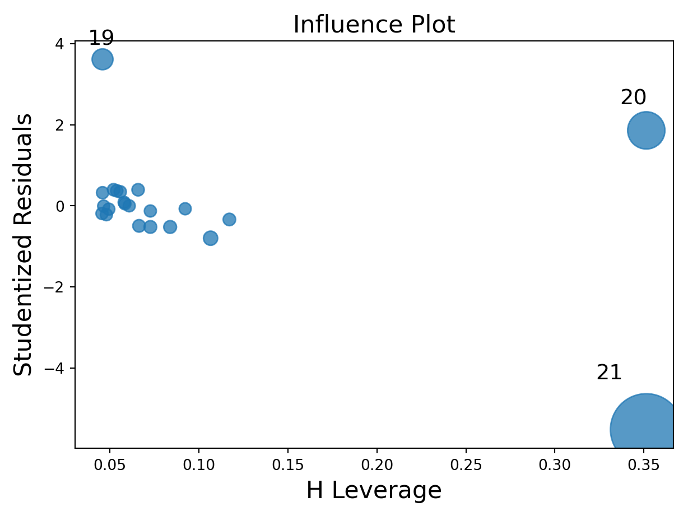
# Outliers
infl = lm_YX.get_influence()
student = infl.summary_frame()["student_resid"]
print(student)0 -0.339444
1 -0.801621
2 -0.074710
3 -0.524455
4 -0.523576
5 -0.129762
6 -0.496850
7 -0.002666
8 0.048212
9 -0.084207
10 -0.009354
11 -0.191969
12 0.321112
13 -0.220966
14 0.395595
15 0.369165
16 0.342765
17 0.083324
18 0.393952
19 3.613065
20 1.858686
21 -5.522252
Name: student_resid, dtype: float64print(student.loc[np.abs(student) > 2])19 3.613065
21 -5.522252
Name: student_resid, dtype: float64# Leverages
h_bar = 2 * (lm_YX.df_model + 1) / lm_YX.nobs
hat_diag = infl.summary_frame()["hat_diag"]
print(hat_diag)0 0.117112
1 0.106547
2 0.092279
3 0.083820
4 0.072710
5 0.072710
6 0.066355
7 0.060843
8 0.058403
9 0.049360
10 0.046460
11 0.045542
12 0.045838
13 0.047991
14 0.052039
15 0.053810
16 0.055791
17 0.057982
18 0.065819
19 0.045838
20 0.351375
21 0.351375
Name: hat_diag, dtype: float64hat_diag.loc[hat_diag > h_bar]20 0.351375
21 0.351375
Name: hat_diag, dtype: float64# Medidas de influencias de las observaciones atípicas
print(infl.summary_frame().loc[ATIP.index[19]])dfb_Intercept 0.291228
dfb_X 0.072449
cooks_d 0.195646
standard_resid 2.853961
hat_diag 0.045838
dffits_internal 0.625534
student_resid 3.613065
dffits 0.791915
Name: 19, dtype: float64print(infl.summary_frame().loc[ATIP.index[20]])dfb_Intercept -0.917055
dfb_X 1.276478
cooks_d 0.833454
standard_resid 1.754152
hat_diag 0.351375
dffits_internal 1.291088
student_resid 1.858686
dffits 1.368027
Name: 20, dtype: float64print(infl.summary_frame().loc[ATIP.index[21]])dfb_Intercept 2.724619
dfb_X -3.792484
cooks_d 3.337692
standard_resid -3.510342
hat_diag 0.351375
dffits_internal -2.583676
student_resid -5.522252
dffits -4.064480
Name: 21, dtype: float64# Estimaciones robustas
# Regresión cuartilítica
formula = 'Y ~ X'
qr_YX = smf.quantreg(formula, ATIP)
DAM = qr_YX.fit(q=0.5)
print(DAM.summary()) QuantReg Regression Results
==============================================================================
Dep. Variable: Y Pseudo R-squared: 0.4004
Model: QuantReg Bandwidth: 0.8651
Method: Least Squares Sparsity: 1.464
Date: Wed, 15 Nov 2023 No. Observations: 22
Time: 09:37:22 Df Residuals: 20
Df Model: 1
==============================================================================
coef std err t P>|t| [0.025 0.975]
------------------------------------------------------------------------------
Intercept 2.1375 0.346 6.181 0.000 1.416 2.859
X 0.5750 0.075 7.657 0.000 0.418 0.732
==============================================================================# Comparación de resultados para diferentes cuartiles con MCO
quantiles = np.arange(0.1, 1, 0.1)
def fit_model(q): res = qr_YX.fit(q=q); return [q, res.params["Intercept"], res.params["X"]] + res.conf_int().loc["X"].tolist()
models = [fit_model(x) for x in quantiles]
models = pd.DataFrame(models, columns=["q", "a", "b", "lb", "ub"])
from statsmodels.formula.api import ols
ols = smf.ols("Y ~ X", ATIP).fit()
ols_ci = ols.conf_int().loc["X"].tolist()
ols = dict(a=ols.params["Intercept"], b=ols.params["X"], lb=ols_ci[0], ub=ols_ci[1])
print(models) q a b lb ub
0 0.1 3.093749 -0.062499 NaN NaN
1 0.2 1.899998 0.500000 NaN NaN
2 0.3 1.680000 0.600000 0.427153 0.772847
3 0.4 1.725000 0.650000 0.502502 0.797498
4 0.5 2.137492 0.575002 0.418354 0.731651
5 0.6 2.100000 0.600000 0.443285 0.756715
6 0.7 2.073525 0.617650 0.451179 0.784121
7 0.8 2.153834 0.615386 NaN NaN
8 0.9 2.299994 0.600001 NaN NaNprint(ols){'a': 2.908677678041684, 'b': 0.3430209190606518, 'lb': 0.06539606119633479, 'ub': 0.6206457769249688}# Gráfica asociada
plt.figure(4)
n = models.shape[0]
p1 = plt.plot(models.q, models.b, color="black", label="Reg.cuart.")
p2 = plt.plot(models.q, models.ub, linestyle="dotted", color="black")
p3 = plt.plot(models.q, models.lb, linestyle="dotted", color="black")
p4 = plt.plot(models.q, [ols["b"]] * n, color="red", label="MCO")
p5 = plt.plot(models.q, [ols["lb"]] * n, linestyle="dotted", color="red")
p6 = plt.plot(models.q, [ols["ub"]] * n, linestyle="dotted", color="red")
plt.ylabel(r"$\beta_{X}$")
plt.xlabel("Cuartiles de la distribución condicional")
plt.legend()
plt.show()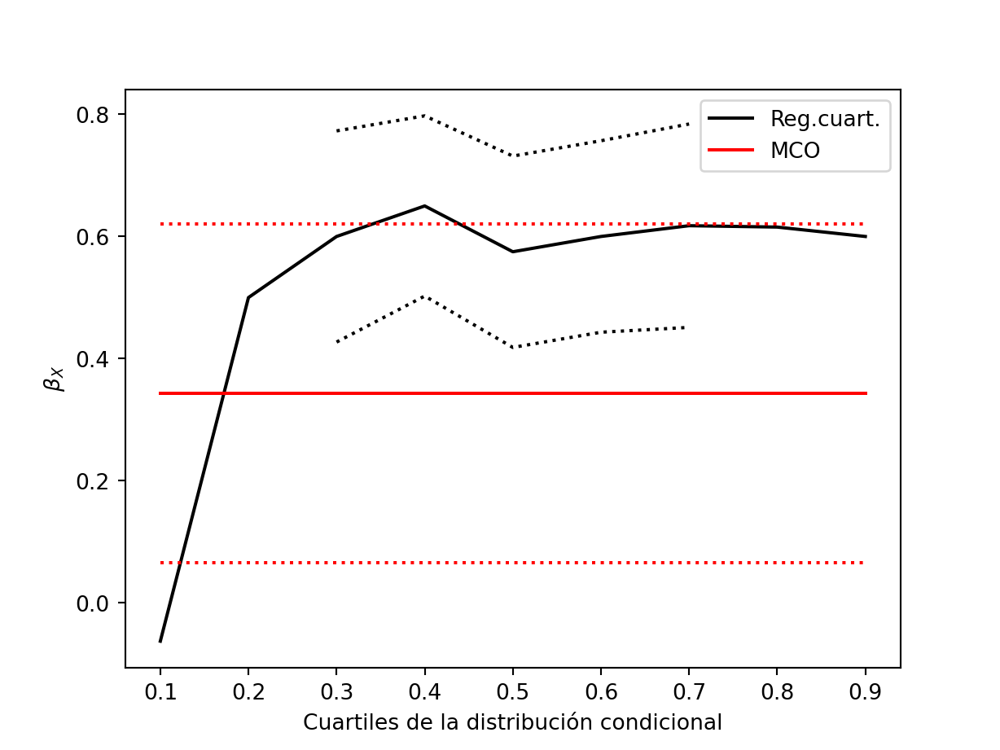
# Estimadores M y MM
from statsmodels.formula.api import rlm
rlm_YX = rlm("Y ~ X", ATIP).fit()
print(rlm_YX.summary()) Robust linear Model Regression Results
==============================================================================
Dep. Variable: Y No. Observations: 22
Model: RLM Df Residuals: 20
Method: IRLS Df Model: 1
Norm: HuberT
Scale Est.: mad
Cov Type: H1
Date: Wed, 15 Nov 2023
Time: 09:37:23
No. Iterations: 15
==============================================================================
coef std err z P>|z| [0.025 0.975]
------------------------------------------------------------------------------
Intercept 1.9357 0.171 11.348 0.000 1.601 2.270
X 0.5977 0.037 16.137 0.000 0.525 0.670
==============================================================================
If the model instance has been used for another fit with different fit parameters, then the fit options might not be the correct ones anymore .